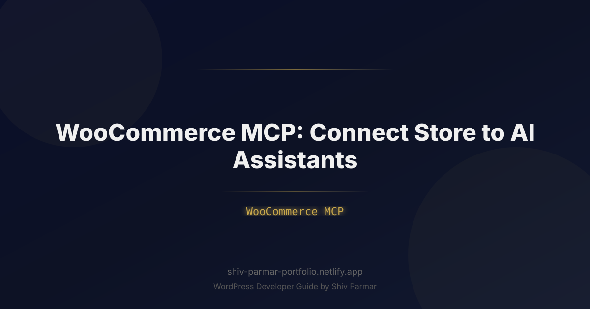

WooCommerce MCP: Connect Store to AI Assistants | Shiv Parmar
Table of Contents
Managing an e-commerce enterprise has historically required balancing fragmented dashboards, interpreting disconnected telemetry, and executing repetitive administrative workflows across inventory, fulfillment, and customer support. While generative artificial intelligence introduced conversational wrappers and generic chatbots to digital storefronts, these surface-level tools lacked direct, deterministic access to the transactional engine beneath. They could converse, but they could not orchestrate.
The introduction of the Model Context Protocol (MCP) has fundamentally shifted this dynamic. By establishing a standardized, bidirectional interface between large language models and external databases or APIs, MCP allows advanced AI agents to operate directly within core infrastructure. In an e-commerce context, a WooCommerce MCP integration turns a standard WordPress-backed shop into an intelligent, autonomous commerce node capable of inspecting inventory, triaging order bottlenecks, analyzing purchase trends, and modifying store parameters using natural language commands.
This technical guide will walk you through implementing a modern store integration using WooCommerce and the Model Context Protocol. Whether you are building internal agentic workflows to automate catalog maintenance or deploying autonomous customer-facing assistants with real-time stock awareness, this guide provides the architecture, code, and operational strategies required to connect your store directly to the next generation of AI reasoning engines.
What is WooCommerce MCP?
The Model Context Protocol (MCP) is an open-source standard designed by Anthropic that normalizes how artificial intelligence models discover, read, and write to external data sources and execution environments. Rather than writing custom, brittle function-calling schemas for every model iteration or relying on vendor-locked chatbot plugins, MCP establishes a client-host-server topology. In this architecture, the AI assistant (the MCP client) communicates over standard JSON-RPC 2.0 with an intermediary service (the MCP server), which exposes structured resources, prompts, and deterministic tools.
A WooCommerce MCP server acts as an intelligent abstraction layer over the WooCommerce REST API. It transforms standard WordPress e-commerce endpoints into context-aware primitives that AI assistants can parse, query, and safely trigger. When an AI agent needs to inspect an order backlog, query warehouse levels, or draft customer-specific discount codes, it executes standardized MCP tools that map directly to authenticated WooCommerce operations.
Unlike traditional webhooks or simple API scrapers, an MCP-based store integration provides conversational models with three fundamental capabilities:
- Tools: Actionable routines that allow AI agents to take actions inside WooCommerce (e.g., updating a product's regular price, generating shipping labels, adjusting variant stock levels, or canceling fraudulent transactions).
- Resources: Real-time contextual data streams that the model can inspect as passive context (e.g., product schema maps, sales ledgers, customer lifetime value reports, or inventory logs).
- Prompts: Pre-packaged behavioral templates designed to constrain how the model processes commercial commands, ensuring outputs align with merchant policies and regulatory requirements.
By delegating tool resolution to an MCP server, developers can swap or upgrade underlying foundational models (such as Claude 3.7 Sonnet, GPT-4o, or local open-weights models running via Ollama) without refactoring the foundational store hooks. The AI agent simply queries the MCP server's exposed tool definition manifest and begins interacting with the storefront seamlessly.
Why WooCommerce MCP Matters in 2026
The global e-commerce landscape has transitioned from transactional storefronts to agent-mediated commerce. In 2026, consumer discovery is no longer constrained to search engine results pages or on-site search filters; users increasingly delegate procurement, price tracking, and order inquiries to autonomous personal agents. Concurrently, internal store management has grown too complex for manual execution.
Traditional WooCommerce management relies on humans navigating the wp-admin interface, running manual exports, and stitching together third-party SaaS integrations. An MCP-driven store integration eliminates these friction points by exposing raw, deterministic management capabilities directly to orchestrating models.
| Operational Dimension | Traditional WooCommerce Architecture | WooCommerce MCP Architecture |
|---|---|---|
| Data Access | Siloed behind admin dashboards, manual CSV exports, or custom SQL queries. | Zero-shot semantic discovery through structured MCP Resources and dynamic tool calls. |
| Workflow Execution | Human clicks buttons in wp-admin; batch jobs execute on static crons. |
Autonomous AI agents chain multi-step workflows based on high-level operational intent. |
| Integration Overhead | High; requires individual point-to-point plugins for analytics, CRM, and support bots. | Low; standardized JSON-RPC 2.0 interface reusable across any MCP-compliant client. |
| Contextual Awareness | Chatbots rely on static embeddings or fragile semantic search indices. | Direct access to live, transactional database state with dynamic schema validation. |
| System Safety | Broad API keys exposed directly to untrusted scripts or vendor applications. | Granular tool scoping, local schema sanitation, and mandatory human-in-the-loop gates. |
The rise of agentic commerce also demands near-zero latency and transactional accuracy. Hallucinations in consumer applications are irritating; hallucinations in e-commerce can lead to overselling inventory, charging incorrect shipping rates, or leaking personally identifiable information (PII). By employing a typed, deterministic WooCommerce MCP layer, actions are strictly validated against JSON Schema definitions before reaching your WordPress database. The AI handles the natural language understanding and strategic planning, while the MCP server guarantees computational correctness.
Step-by-Step Guide: Building a Custom WooCommerce MCP Integration
Building a robust WooCommerce MCP integration requires configuring secure access keys inside WordPress, creating a Node.js/TypeScript MCP server that talks to the WooCommerce REST API v3, and connecting an MCP-compatible client (such as Claude Desktop or an enterprise orchestration framework) to that server.
1. Generating Secure WooCommerce REST API Credentials
Before launching your MCP server, you must generate dedicated REST API credentials inside your WordPress installation. Avoid using shared administrative keys or master database credentials.
- Log in to your WordPress dashboard with administrator privileges.
- Navigate to WooCommerce > Settings > Advanced > REST API.
- Select Add Key.
- Provide a descriptive Description (e.g.,
mcp-agent-orchestrator). - Select an appropriate Permissions level:
- Choose Read if your AI assistant will only handle reporting, catalog search, or passive customer support queries.
- Choose Read/Write if your AI agents will manage inventory levels, fulfill orders, generate coupons, or update prices.
- Click Generate API Key. Immediately save the Consumer Key (starts with
ck_) and Consumer Secret (starts withcs_) in a secure password vault or environment file. WordPress will not display these secrets again.
2. Setting Up the Node.js MCP Project
Initialize a secure, typed TypeScript project running on modern Node.js (v20+ recommended). We will leverage the official @modelcontextprotocol/sdk alongside the official @woocommerce/woocommerce-rest-api client.
mkdir woocommerce-mcp-server
cd woocommerce-mcp-server
npm init -y
npm install @modelcontextprotocol/sdk @woocommerce/woocommerce-rest-api dotenv zod
npm install --save-dev typescript @types/node tsx
npx tsc --initUpdate your tsconfig.json to compile modern ESM modules:
{
"compilerOptions": {
"target": "ES2022",
"module": "NodeNext",
"moduleResolution": "NodeNext",
"lib": ["ES2022"],
"outDir": "./dist",
"rootDir": "./src",
"strict": true,
"esModuleInterop": true,
"skipLibCheck": true,
"forceConsistentCasingInFileNames": true
},
"include": ["src/**/*"]
}Create a secure environment file named .env in the project root:
WC_STORE_URL="https://your-store-domain.com"
WC_CONSUMER_KEY="ck_xxxxxxxxxxxxxxxxxxxxxxxxxxxxxxxxxxxxxxxx"
WC_CONSUMER_SECRET="cs_xxxxxxxxxxxxxxxxxxxxxxxxxxxxxxxxxxxxxxxx"3. Implementing the MCP Server Core
Create src/index.ts. This file will instantiate the MCP server, connect to WooCommerce via HTTPS using basic auth over TLS, define operational tools, and bind to Standard Input/Output (stdio) for local client IPC.
import { Server } from "@modelcontextprotocol/sdk/server/index.js";
import { StdioServerTransport } from "@modelcontextprotocol/sdk/server/stdio.js";
import {
CallToolRequestSchema,
ListToolsRequestSchema,
Tool
} from "@modelcontextprotocol/sdk/types.js";
import WooCommerceRestApi from "@woocommerce/woocommerce-rest-api";
import dotenv from "dotenv";
dotenv.config();
const WooCommerce = new WooCommerceRestApi.default({
url: process.env.WC_STORE_URL || "",
consumerKey: process.env.WC_CONSUMER_KEY || "",
consumerSecret: process.env.WC_CONSUMER_SECRET || "",
version: "wc/v3"
});
const server = new Server(
{
name: "woocommerce-mcp-server",
version: "1.0.0",
},
{
capabilities: {
tools: {},
},
}
);
// Define tools exposed to the AI agent
const TOOLS: Tool[] = [
{
name: "get_product_inventory",
description: "Fetch product details, current stock quantity, and pricing by SKU or product ID.",
inputSchema: {
type: "object",
properties: {
product_id: {
type: "number",
description: "The unique WooCommerce product ID (optional if SKU provided)."
},
sku: {
type: "string",
description: "The product stock keeping unit (SKU)."
}
}
}
},
{
name: "update_stock_quantity",
description: "Update the inventory level for a specific product ID. Use with caution.",
inputSchema: {
type: "object",
properties: {
product_id: {
type: "number",
description: "The WooCommerce product ID."
},
stock_quantity: {
type: "number",
description: "The new absolute stock level integer."
}
},
required: ["product_id", "stock_quantity"]
}
},
{
name: "list_pending_orders",
description: "Retrieve a list of recent orders with status 'processing' or 'on-hold' requiring attention.",
inputSchema: {
type: "object",
properties: {
limit: {
type: "number",
description: "Number of orders to retrieve (max 50, default 10).",
default: 10
}
}
}
}
];
// Handle tool listing
server.setRequestHandler(ListToolsRequestSchema, async () => {
return { tools: TOOLS };
});
// Handle tool execution
server.setRequestHandler(CallToolRequestSchema, async (request) => {
const { name, arguments: args } = request.params;
try {
switch (name) {
case "get_product_inventory": {
const { product_id, sku } = args as { product_id?: number; sku?: string };
if (product_id) {
const response = await WooCommerce.get(`products/${product_id}`);
const p = response.data;
return {
content: [
{
type: "text",
text: JSON.stringify({
id: p.id,
name: p.name,
sku: p.sku,
price: p.price,
manage_stock: p.manage_stock,
stock_quantity: p.stock_quantity,
stock_status: p.stock_status
}, null, 2)
}
]
};
}
if (sku) {
const response = await WooCommerce.get("products", { sku });
if (!response.data || response.data.length === 0) {
return {
content: [{ type: "text", text: `No product found matching SKU: ${sku}` }],
isError: true
};
}
const p = response.data[0];
return {
content: [
{
type: "text",
text: JSON.stringify({
id: p.id,
name: p.name,
sku: p.sku,
price: p.price,
stock_quantity: p.stock_quantity,
stock_status: p.stock_status
}, null, 2)
}
]
};
}
return {
content: [{ type: "text", text: "Must provide either product_id or sku." }],
isError: true
};
}
case "update_stock_quantity": {
const { product_id, stock_quantity } = args as { product_id: number; stock_quantity: number };
const response = await WooCommerce.put(`products/${product_id}`, {
manage_stock: true,
stock_quantity: stock_quantity
});
return {
content: [
{
type: "text",
text: `Stock for product ${product_id} (${response.data.name}) updated successfully to ${response.data.stock_quantity}.`
}
]
};
}
case "list_pending_orders": {
const limit = typeof args?.limit === "number" ? Math.min(args.limit, 50) : 10;
const response = await WooCommerce.get("orders", {
status: "processing,on-hold",
per_page: limit
});
const summarizedOrders = response.data.map((order: any) => ({
order_id: order.id,
status: order.status,
total: `${order.currency} ${order.total}`,
date_created: order.date_created,
customer_email: order.billing?.email,
item_count: order.line_items?.length || 0,
items: order.line_items?.map((item: any) => `${item.name} x${item.quantity}`).join(", ")
}));
return {
content: [
{
type: "text",
text: JSON.stringify(summarizedOrders, null, 2)
}
]
};
}
default:
return {
content: [{ type: "text", text: `Unknown tool: ${name}` }],
isError: true
};
}
} catch (error: any) {
const errorDetails = error.response ? JSON.stringify(error.response.data) : error.message;
return {
content: [
{
type: "text",
text: `WooCommerce API Error: ${errorDetails}`
}
],
isError: true
};
}
});
// Start the server using Stdio transport
async function main() {
const transport = new StdioServerTransport();
await server.connect(transport);
console.error("WooCommerce MCP Server running via stdio");
}
main().catch((error) => {
console.error("Fatal server error:", error);
process.exit(1);
});4. Compiling and Testing the Server
Add a build and execution script to your package.json file:
{
"scripts": {
"build": "tsc",
"start": "node dist/index.js",
"dev": "tsx src/index.ts"
}
}Build the server to verify there are no TypeScript interface violations:
npm run build5. Connecting to Claude Desktop or Other MCP Clients
To use this store integration with Anthropic's Claude Desktop app (or an agent orchestrator using Cursor or OpenHands), link your compiled Node process into the client configuration manifest.
Open your local Claude Desktop configuration file:
- macOS:
~/Library/Application Support/Claude/claude_desktop_config.json - Windows:
%APPDATA%\Claude\claude_desktop_config.json
Add your WooCommerce MCP server definition under the mcpServers key:
{
"mcpServers": {
"woocommerce-store": {
"command": "node",
"args": ["/ABSOLUTE/PATH/TO/woocommerce-mcp-server/dist/index.js"],
"env": {
"WC_STORE_URL": "https://your-store-domain.com",
"WC_CONSUMER_KEY": "ck_xxxxxxxxxxxxxxxxxxxxxxxxxxxxxxxxxxxxxxxx",
"WC_CONSUMER_SECRET": "cs_xxxxxxxxxxxxxxxxxxxxxxxxxxxxxxxxxxxxxxxx"
}
}
}
}Restart Claude Desktop. Look for the hammer icon in the conversation window; you will now see get_product_inventory, update_stock_quantity, and list_pending_orders registered. You can now prompt the assistant with natural language instructions:
"Check our pending orders. If any order contains items that are critically low in stock (less than 3 units left), warn me and display the customer details so we can handle priority shipping."
The AI will autonomously call list_pending_orders, inspect individual item inventories using get_product_inventory, synthesize the operational findings, and return a clean, actionable report.
Best Practices for WooCommerce MCP Integrations
Deploying programmatic store control to probabilistic language models requires defensive engineering. Below are essential architecture practices to keep your WooCommerce storefront secure, performant, and resilient.
Enforce Strict Schema Sanitization
Never rely exclusively on the model to pass data types that your database will accept without failing. Even advanced reasoning engines occasionally pass strings where integers are required, or format dates using localized formats rather than ISO 8601 strings. Use validation libraries like Zod inside your tool handlers to intercept and validate payloads before invoking the WooCommerce REST client.
Implement "Human-in-the-Loop" for Destructive Operations
While granting AI agents read access to orders and stock levels is low risk, granting full write access for catalog updates or refunds requires safeguards. In MCP architectures, this is solved via dual verification. For critical tools—such as delete_product, process_refund, or update_pricing_batch—design the MCP tool to return a confirmation token rather than immediately executing the change:
// Safe pattern: Require two-phase commit for monetary adjustments
if (args.price_adjustment_percent > 20 && !args.confirmation_token) {
const token = generateSecureNonce();
return {
content: [{
type: "text",
text: `Safety threshold exceeded. Attempting to modify price by ${args.price_adjustment_percent}%. Please confirm this execution with authorization token: ${token}`
}]
};
}Apply Token-Aware Response Truncation
The WooCommerce API produces verbose JSON envelopes containing dozens of metadata fields, embedded hypermedia links (_links), image source objects, and unused tax tables. Passing raw WooCommerce JSON payloads directly to an MCP client will exhaust your model's context window and dramatically inflate API costs.
Always parse the WooCommerce response and construct a minimal projection containing only the attributes the agent strictly needs to answer the question (as demonstrated in our Step-by-Step implementation above).
Protect the WordPress REST API with Rate Limits
When an autonomous agent chains tools together, it can generate hundreds of API requests in seconds. If your WordPress site is hosted on a modest virtual private server (VPS) or shared hosting tier, these bursts can overwhelm MySQL threads. Implement aggressive server-side caching (e.g., Redis Object Cache for WordPress) and place rate-limiting rules at the reverse proxy (Nginx/Cloudflare) specifically for the /wp-json/wc/v3/* route.
Common Mistakes to Avoid
Avoiding these architectural pitfalls will save hours of debugging and prevent expensive production incidents.
1. Running MCP Servers Under Master Administrator Credentials
One of the most dangerous patterns is generating a WooCommerce Consumer Key from an account with unrestricted WordPress super-admin privileges. If an agent encounters a prompt injection attack via customer order notes or an untrusted customer query, an attacker could instruct the model to execute destructive operations. Always tie your REST API keys to a dedicated WordPress user with the least privilege necessary (e.g., the Shop Manager role rather than full Administrator).
2. Omitting Proper Handling for Product Variations
In WooCommerce, variable products do not store inventory on the parent product record. Stock is stored on individual variant records under the /products/<parent_id>/variations endpoint. If your MCP tools assume all catalog items are simple products, your AI agents will consistently report that variable items are out of stock or update parent objects incorrectly, corrupting catalog presentation.
// Fragile pattern: Assuming simple product structure
const p = await wc.get(`products/${id}`);
const stock = p.data.stock_quantity; // Returns null if product is variable!
// Robust pattern: Check product type and route accordingly
if (p.data.type === "variable") {
const variations = await wc.get(`products/${id}/variations`);
// Process individual SKU variants...
}3. Ignoring Caching and Invalidation Realities
If your MCP server queries WooCommerce, updates an order, and immediately re-queries that order while an aggressive REST cache plugin (like WP Rocket or Batcache) is running without bypass rules, the AI will receive stale state data. Believing its prior action failed, the agent may re-execute the operation, causing duplicate coupons, repeated inventory decreases, or multiple customer email notifications. Ensure that all MCP programmatic requests pass the Cache-Control: no-cache header or use standard authenticated HTTP headers that trigger cache bypasses in WordPress.
4. Exposing Raw Database Stack Traces to the LLM
When WooCommerce returns an error (e.g., a database connection timeout or a duplicate SKU conflict), do not dump the raw WordPress SQL stack trace directly back into the MCP response content. Language models can easily misinterpret internal MySQL error dumps, leading to confused recovery loops. Catch API errors gracefully, log the diagnostic data to an internal operational file, and present the AI client with clean, structured error summaries that describe what failed and why.
Conclusion
Embracing the potential of WooCommerce MCP marks a transformative shift in how merchants manage and scale their e-commerce operations. By building a direct, standardized bridge between your backend catalog and autonomous AI agents, this next-generation store integration turns static product management into dynamic, intelligent workflows. Whether it is streamlining order processing, automating inventory queries, or delivering real-time, context-aware shopper interactions, adopting MCP ensures your digital storefront operates at the forefront of modern commerce.
As conversational commerce continues to reshape consumer expectations, having your WooCommerce store communicate directly with advanced language models is no longer just an experiment—it is a strategic necessity. A secure and efficient store integration not only cuts down on manual administration but also future-proofs your platform, allowing you to deploy sophisticated AI agents that drive conversions and optimize customer satisfaction effortlessly.
Ready to unlock the full potential of your e-commerce platform with WooCommerce MCP? Implementing custom, reliable solutions requires hands-on technical expertise. Shiv Parmar is available for WordPress development work worldwide, helping businesses integrate cutting-edge AI capabilities and build robust, scalable online stores. Get in touch today to discuss your project and prepare your store for the future of AI-driven commerce.